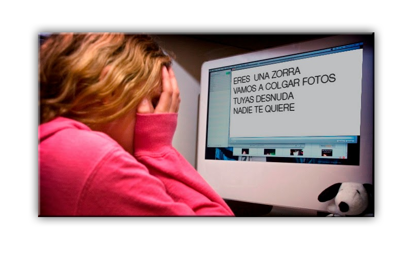

¿Por qué es especialmente grave el ciberbullying?
El anonimato, la no percepción directa e inmediata del daño causado y la adopción de roles imaginarios en la Red convierten al ciberbullying en un grave problema.
|
Sinónimos
Además de la adaptación del neologismo inglés (cyber-bullying) se utilizan en castellano otros términos para denominar al ciberbullying, combinando el prefijo ciber- o los adjetivos online o virtual con las palabras matonaje, matoneo o abuso, asociadas con la denominación de matones o abusones para los que efectúan el bullying. Así podemos encontrarnos con los siguientes sinónimos de ciberbullying: ciberabuso, cibermantonaje, cibermatoneo; abuso online, mantonaje online, matoneo online; abuso virtual, matonaje virtual, matoneo virtual. Además, en inglés también se utilizan e-bullying y online bullying.

|